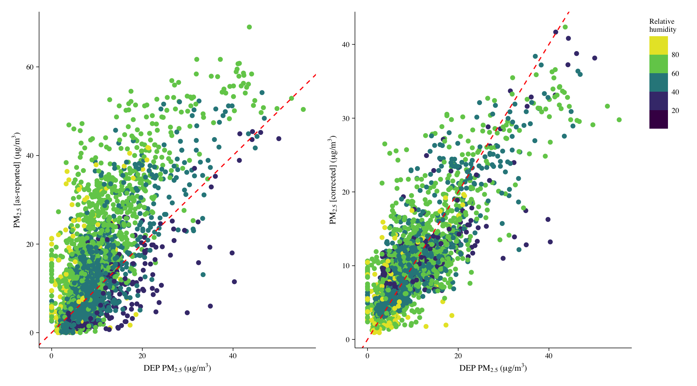

# Script summary ----------------------------------------------------------
# The following script is used to calibrate PurpleAir sensors to an EPA
# reference station in Freemansburg, PA.
# Created - 11/29/2022 (jsm)
# Updated - 01/20/2023 (jsm)Calibration
Script summary:
Data import:
Code
# Packages ----------------------------------------------------------------
# Install and load required packages
pacman::p_load(tidyverse, lubridate, patchwork, weathermetrics)
# Data --------------------------------------------------------------------
# EPA reference station
# Build query string for EPA AirNow API
# Note this requires an account and an API key for access
readRenviron('.Renviron')
airnow.api <- Sys.getenv('airnow')
query <- {
base.url <- 'https://www.airnowapi.org/aq/data/?'
date.url <- 'startDate=2022-01-01T05&endDate=2024-01-01T05&'
bbox.url <- 'parameters=PM25&BBOX=-75.410830,40.603913,-75.289980,40.699767&'
data.url <- 'dataType=B&format=text/csv&verbose=1&monitorType=0&includerawconcentrations=1&'
api.key <- paste0('API_KEY=', airnow.api)
query <- paste0(base.url,date.url,bbox.url,data.url,api.key)
}
# Read in EPA data from API query
query <- read_csv(query, col_names=FALSE)
df.dep <- query %>%
select(X3,X7) %>%
rename(datetime=1,
pm25=2) %>%
mutate(datetime=datetime-hours(5),
sensor_index='Freemansburg DEP') %>%
mutate(pm25=case_when(
pm25 < 0 ~ NA_real_,
TRUE ~ pm25
))
# PurpleAir data
# Data are exported from SQL database hosted on gisweb server
df.pa <- read_csv('data/fb_sensor_export.csv') %>%
arrange(sensor_index, time_stamp) %>%
# Convert timestamp to datetime
mutate(datetime=as_datetime(time_stamp, tz='EST5EDT')) %>%
# Remove minutes from time
mutate(datetime=as.POSIXct(paste(datetime), format="%Y-%m-%d %H")) %>%
# Group by sensor and datetime and calculate hourly averages
group_by(sensor_index,datetime) %>%
summarize(pm25=round(mean(pm2_5, na.rm=TRUE),1),
rh=round(mean(humidity, na.rm=TRUE),1),
t=round(mean(temperature, na.rm=TRUE),1)) %>%
ungroup() %>%
mutate(sensor_index=case_when(
sensor_index == 108584 ~ 'Freemansburg PA1',
sensor_index == 108706 ~ 'Freemansburg PA2',
TRUE ~ 'Freemansburg PA3'
)) %>%
relocate(sensor_index, .after='pm25')
# Convert from long to wide format
df.pa.wide <- df.pa |>
pivot_wider(values_from=c(pm25,rh,t), names_from=sensor_index) |>
rename(PA1_pm=2,PA2_pm=3,PA3_pm=4,PA1_rh=5,PA2_rh=6,PA3_rh=7,PA1_t=8,PA2_t=9,PA3_t=10) |>
# Calculate dew point from humidity and temperature
mutate(
PA1_dp=humidity.to.dewpoint(PA1_rh, PA1_t, temperature.metric = "fahrenheit"),
PA2_dp=humidity.to.dewpoint(PA2_rh, PA2_t, temperature.metric = "fahrenheit"),
PA3_dp=humidity.to.dewpoint(PA3_rh, PA3_t, temperature.metric = "fahrenheit")
)
# Join PurpleAir data with DEP reference data by datetime
df.pm25 <- df.pa.wide |>
left_join(df.dep,by='datetime') |>
select(-sensor_index)
str(df.pm25)tibble [2,802 × 15] (S3: tbl_df/tbl/data.frame)
$ datetime: POSIXct[1:2802], format: "2022-09-26 14:00:00" "2022-09-26 15:00:00" ...
$ PA1_pm : num [1:2802] 4.8 4.3 4.7 5.1 5.1 4.2 4.2 5.3 4.6 5 ...
$ PA2_pm : num [1:2802] 4.8 4.2 4.6 5.2 5.2 4.3 4.3 5.2 4.4 4.8 ...
$ PA3_pm : num [1:2802] 5.3 4.6 5.1 5.4 5.4 4.7 4.6 6.2 4.5 4.7 ...
$ PA1_rh : num [1:2802] 56.6 48.6 45.2 42.3 41.5 40.7 39 39.2 39.1 41.4 ...
$ PA2_rh : num [1:2802] 57.4 48.7 44.9 42 41.1 40.3 38.5 38.7 38.4 41.4 ...
$ PA3_rh : num [1:2802] 52 43.9 40.4 37.9 37 36.3 34.8 35 34.4 37.6 ...
$ PA1_t : num [1:2802] 69.7 72.3 73.3 74 74 73.8 74 73.7 71 68.6 ...
$ PA2_t : num [1:2802] 69.4 72 73.3 73.8 73.7 73.5 73.6 73.3 71 68.2 ...
$ PA3_t : num [1:2802] 70.7 73.6 74.7 75.2 75.1 74.9 75.2 74.3 72 69.4 ...
$ PA1_dp : num [1:2802] 53.5 51.8 50.7 49.6 49.1 ...
$ PA2_dp : num [1:2802] 53.6 51.6 50.5 49.2 48.5 ...
$ PA3_dp : num [1:2802] 52.1 50.2 49 47.7 47 ...
$ pm25 : num [1:2802] 5.2 5.9 10.1 5.6 5.9 5.1 5.9 6.3 7.5 8.1 ...
$ PA1_pmc : num [1:2802] 6.48 7.45 8.24 8.97 9.11 ...Calibration:
Code
# Regression model for PM2.5 greater than 20
pa1.mod1 <- lm(pm25 ~ PA1_pm + PA1_t + PA1_rh + PA1_dp,
data = df.pm25[df.pm25$PA1_pm>20,])
summary(pa1.mod1)
# Regression model for PM2.5 less than or equal to 20
pa1.mod2 <- lm(pm25 ~ PA1_pm + PA1_t + PA1_rh + PA1_dp,
data = df.pm25[df.pm25$PA1_pm<=20,])
summary(pa1.mod2)
# Set regression coefficients
{
b0 <- pa1.mod1$coefficients[[1]]
b1 <- pa1.mod1$coefficients[[2]]
b2 <- pa1.mod1$coefficients[[3]]
b3 <- pa1.mod1$coefficients[[4]]
b4 <- pa1.mod1$coefficients[[5]]
y0 <- pa1.mod2$coefficients[[1]]
y1 <- pa1.mod2$coefficients[[2]]
y2 <- pa1.mod2$coefficients[[3]]
y3 <- pa1.mod2$coefficients[[4]]
y4 <- pa1.mod2$coefficients[[5]]
}
# Calculate corrected pm2.5 values
df.pm25 <- df.pm25 |>
mutate(
PA1_pmc=case_when(
PA1_pm > 20 ~ b0 + (b1*PA1_pm) + (b2*PA1_t) + (b3*PA1_rh) + (b4*PA1_dp),
TRUE ~ y0 + (y1*PA1_pm) + (y2*PA1_t) + (y3*PA1_rh) + (y4*PA1_dp)
)
)Regression plots:
Code
# Set theme for plots
theme <- theme(panel.background=element_rect(fill=NA),
panel.border=element_rect(fill=NA,size=0),
panel.grid.major=element_line(size=0),
panel.grid.minor=element_line(size=0),
plot.title=element_blank(),
axis.text.y=element_text(family="Times",size=7,colour="black"),
axis.text.x=element_text(family="Times",size=7,colour="black"),
axis.title=element_text(family="Times",size=8,colour="black"),
axis.ticks=element_line(size=0.25,colour="black",linetype=1),
axis.line=element_line(size=0.25,colour="black",linetype=1),
legend.justification="top",
legend.background=element_blank(),
legend.position='right',
legend.direction='vertical',
legend.key=element_blank(),
legend.title=element_text(family="Times",size=7,colour="black"),
legend.text=element_text(family="Times",size=7,colour="black"))
# Plot 1 - regression observed data
p1 <- df.pm25 |>
ggplot(aes(pm25,PA1_pm,color=PA1_rh)) +
geom_point(show.legend = FALSE) +
geom_abline(slope=1, linetype = "dashed", color="Red") +
scale_color_viridis_b(name='Relative\nhumidity') +
labs(x=expression(paste("DEP PM"["2.5"],
" (",mu, "g", "/", m^3,")", sep="")),
y=expression(paste("PM"["2.5"],
" [as-reported] (", mu, "g", "/", m^3,")", sep=""))) +
theme
# Plot 2 - regression corrected data
p2 <- df.pm25 |>
ggplot(aes(pm25,PA1_pmc,color=PA1_rh)) +
geom_point() +
geom_abline(slope=1, linetype = "dashed", color="Red") +
scale_color_viridis_b(name='Relative\nhumidity') +
labs(x=expression(paste("DEP PM"["2.5"],
" (",mu, "g", "/", m^3,")", sep="")),
y=expression(paste("PM"["2.5"],
" [corrected] (", mu, "g", "/", m^3,")", sep=""))) +
theme
# Patchwork plots together
p1 + p2
Model fit:
Code
# Subset PA1 sensor at Freemansburg site
df.glm <- df.pm25 |>
dplyr::select(PA1_pm, PA1_t, PA1_rh, PA1_dp, pm25)
# Convert tibble to data frame
df.glm <- as.data.frame(df.glm)
# Set model definition
glm.mdef <-
new("ModelSetDefinition",
response = "pm25",
model.type = "lm",
model.family = "gaussian",
base.model = c(""),
variables = c("PA1_pm",
"PA1_t",
"PA1_rh",
"PA1_dp"),
sq.terms = c(""),
interaction.vars = c(""),
remove.interactions = c(""),
required.together = list(),
never.together = list(),
random = c(""),
max.terms.in.formula = 4,
max.interaction.size = 0,
max.num.interactions = 0)
# Create model set
glm.mods <- createModelSet(glm.mdef)
# Run model set with repeat burrows
glm.mods <- runModelSet(glm.mods, model.data=df.glm)
# Model fit summary
glm.mods.summ <- summary(glm.mods)
glm.mods.summ <- glm.mods.summ |>
mutate(across(where(is.numeric), ~round(.x,3)))
# Variable importance summary
glm.mods.varimp <- estimateVariableImportance(glm.mods)
glm.mods.varimp <- glm.mods.varimp |>
mutate(across(where(is.numeric), ~round(.x,3)))
glm.mods.summ[,c(2,4,6:7)] model.name k aicc delta.aicc
3 pm25~PA1_pm + PA1_t + PA1_rh 5 16134.04 0.000
5 pm25~PA1_pm + PA1_rh + PA1_dp 5 16135.03 0.988
7 pm25~PA1_pm + PA1_t + PA1_rh + PA1_dp 6 16135.91 1.873
4 pm25~PA1_pm + PA1_t + PA1_dp 5 16146.35 12.313
13 pm25~PA1_pm + PA1_rh 4 16198.97 64.934
14 pm25~PA1_pm + PA1_dp 4 16728.02 593.979
12 pm25~PA1_pm + PA1_t 4 16735.22 601.182
1 pm25~PA1_pm 3 16762.87 628.826
2 pm25~PA1_rh + PA1_dp 4 18931.77 2797.735
6 pm25~PA1_t + PA1_rh + PA1_dp 5 18921.33 2787.291
8 pm25~1 2 18947.96 2813.917
9 pm25~PA1_t 3 18936.26 2802.218
10 pm25~PA1_rh 3 18945.55 2811.509
11 pm25~PA1_dp 3 18929.81 2795.771
15 pm25~PA1_t + PA1_rh 4 18934.10 2800.065
16 pm25~PA1_t + PA1_dp 4 18931.67 2797.629